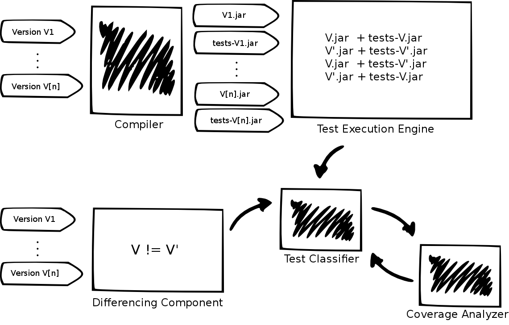

-
TestEvol is now available! Click here to try it out.
TestEvol is a tool for analyzing test-suite evolution.
TestEvol facilitates the systematic study of test-suite evolution for Java programs and JUnit test suites. The tool analyzes a sequence of versions of a software system, where a system consists of an application together with its test suite, and allows for studying how the test cases in the test suite evolved when going from one version to the next.
TestEvol consists of five components, as illustrated in the architecture diagram shown below.
- The compiler component builds each system version and creates two jar files, one containing the application classes and the other containing the test classes.
- The test-execution engine analyzes each pair of system versions (S, S'), where S = (P, T) and S' = (P', T'). First, it executes T on program P and T' on program P' (\ie it runs the tests on the respective program versions). Then, it executes T' on P and T on P'. For each execution, it records the test outcome.
- The differencing component compares T and T' to identify modified, deleted, and added tests. This component is implemented using the wala analysis infrastructure for Java bytecode.
- The test outcomes, collected by the test-execution engine, and the test-suite changes, computed by the differencing component, are then passed to the test classifier, which analyzes the information about test outcomes and test updates to classify each update into eight different categories. For each pair of broken test case and its repaired version, the test classifier also compares the test cases to identify the types of repair changes—different types of method-sequence changes and assertion changes. The classifier is also augmented with a clone detector to avoid tests that where only renamed to be classified as an added test in the new version of the system and as a deleted test in the old one.
- The test classifier also leverages the coverage analyzer to compute the branch coverage achieved by each test; this facilitates the investigation of whether the deleted or added tests cause any variations in the coverage attained by the new test suite.
